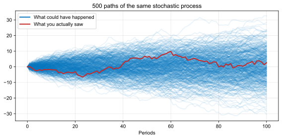
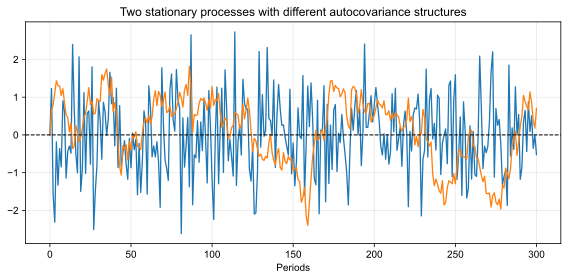
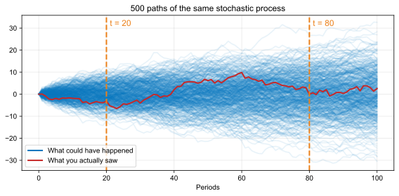
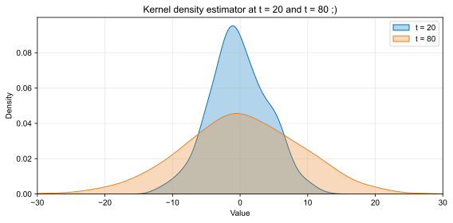

Common data structures in Economics:
Examples:
Formally, the right way to think about a time series is as a stochastic process. First, what is a random variable?
Definition (Random Variable)
Given a probability space \((\Omega,\mathcal{F},\Pr)\), a random variable is a real function \(Y:\Omega\rightarrow\R\) such that \(\{\omega\in\Omega : Y(\omega)\leq c\}\in\mathcal{F}\) for all \(c\in \R\).
Definition (Stochastic Process, a Bit Informal)
A stochastic process is an ordered family of random variables \(\{Y_t, t \in \mathcal{T}\}\) defined on a probability space \((\Omega, \mathcal{F}, \Pr)\), where \(\mathcal{T}\) is an ordered set. For a fixed \(\omega \in \Omega\), the path \(\{Y_t(\omega), t \in \mathcal{T}\}\) is one realization of the process.
Loosely speaking:

Example: inflation in Brazil in 1989
We will need to impose a lot of structure! Without structure, we are lost!
Questions?
Definition (Weak Stationarity)
A stochastic process \(\{Y_t\}\) is weakly stationary (or second-order stationary, or covariance stationary) if, and only if, its first two unconditional population moments exist and are constant over time: \[ \begin{aligned} &\E[Y_t]=\mu, \quad |\mu|<\infty, \quad \forall\, t\in\mathcal{T}\\ &\E[(Y_t-\mu)(Y_{t-h}-\mu)]=\gamma_h, \quad |\gamma_h|<\infty, \quad \forall\, t\in\mathcal{T}, \quad h=0,\pm 1,\pm 2, \ldots \end{aligned} \]
True or false?

\(Y_t = \rho\, Y_{t-1} + \sqrt{1-\rho^2}\,\varepsilon_t\) with \(\varepsilon_t \iid N(0,1)\). The shocks stay fixed: only \(\rho\) changes
shocks = {
const draw = d3.randomNormal.source(d3.randomLcg(2141))(0, 1)
return Float64Array.from({length: 1000}, draw)
}
// Y_0 comes from the stationary law N(0, 1), so the variance is 1 for every rho
persistPath = {
const y = new Float64Array(shocks.length)
const s = Math.sqrt(1 - rho * rho)
y[0] = shocks[0]
for (let t = 1; t < y.length; t++) y[t] = rho * y[t - 1] + s * shocks[t]
return Array.from(y, (v, t) => ({t, y: v}))
}
Plot.plot({
width: 1200, height: 450, marginLeft: 50, marginBottom: 45,
style: {fontSize: "19px", fontFamily: "Arial, Arimo, sans-serif"},
x: {label: "Periods", labelAnchor: "center", labelArrow: "none"},
y: {label: null, domain: [-4, 4], ticks: 5},
grid: true,
marks: [
Plot.ruleY([0], {stroke: "black", strokeDasharray: "5,4"}),
Plot.line(persistPath, {x: "t", y: "y", stroke: "#0072BC", strokeWidth: 1.3, clip: true})
]
})Definition (Strong Stationarity)
A stochastic process \(\{Y_t\}\) is strongly stationary (or strictly stationary) if, and only if, its joint distributions are invariant to time shifts: for every \(n\), every \(t_1, \dots, t_n\) and every \(\tau\), \[ F_{t_1,\ldots,t_n}(y_1,\ldots,y_n)=F_{t_1+\tau,\ldots,t_n+\tau}(y_1,\ldots,y_n) \quad \forall\, (y_1, \ldots, y_n) \] where \(F_{t_1,\ldots,t_n}\) is the joint CDF of \((Y_{t_1},\ldots,Y_{t_n})\).
True or false?


Proposal 1: estimate \(\E[m_{20}]\) by averaging the values at \(t=20\) across all paths
Proposal 2: I do not have access to the whole process, so I use the one path I have
Definition (Ergodicity, Intuitive)
A stochastic process \(\{Y_t\}\) is ergodic if its realized paths are “rich enough” with probability 1. By “rich enough”, we mean that, with probability 1, it will neither get stuck in a subset of the state space nor fall into cyclic trajectories.
Said another way: if you observe a process for a long enough \(T\), you will be able to learn everything about the process
Important:
Also important:
Two stationary processes, 50 paths each:
ergo = {
const rng = d3.randomLcg(126)
const draw = d3.randomNormal.source(rng)(0, 1)
const T = 5000
const grid = Array.from(new Set(d3.range(301).map(j => Math.round(Math.exp(j * Math.log(T) / 300)))))
return d3.range(50).map(i => {
const S2 = rng() < 0.5 ? 0.5 : 1.5
let sum1 = 0, sum2 = 0, k = 0
const avgs = []
for (let t = 1; t <= T; t++) {
const e = draw()
sum1 += e
sum2 += e * e
if (t === grid[k]) { avgs.push({t, m1: sum1 / t, m2: sum2 / t}); k++ }
}
return {path: i, S2, avgs}
})
}
// Left: Y = e, so its time average is that of e. Right: Y = X^2 = S^2 e^2, so its time average is S^2 times that of e^2
ergoRows = ergo.flatMap(p => p.avgs
.filter(d => d.t <= Tmax)
.map(d => ({path: p.path, t: d.t, m1: d.m1, m2: p.S2 * d.m2})))
avgPanel = (key, target, domain, title) => html`<div>
<div style="text-align: center">${title}</div>
${Plot.plot({
width: 590, height: 350, marginLeft: 50, marginBottom: 45,
style: {fontSize: "18px", fontFamily: "Arial, Arimo, sans-serif"},
x: {type: "log", domain: [1, Tmax], label: "t (log scale)", labelAnchor: "center", labelArrow: "none"},
y: {label: null, domain, ticks: 5},
grid: true,
marks: [
Plot.ruleY([target], {stroke: "black", strokeDasharray: "7,5", strokeWidth: 1.5}),
Plot.line(ergoRows.filter(d => d.path > 0), {x: "t", y: key, z: "path", stroke: "#0072BC", strokeOpacity: 0.3, strokeWidth: 1.3, clip: true}),
Plot.line(ergoRows.filter(d => d.path === 0), {x: "t", y: key, stroke: "#C62828", strokeWidth: 3, clip: true}),
Plot.text([`the path you saw: ${ergoRows.filter(d => d.path === 0).at(-1)[key].toFixed(2)}`], {frameAnchor: "top-right", dx: -10, dy: 10, fill: "#C62828", fontWeight: "bold", fontSize: 20, stroke: "white", strokeWidth: 6})
]
})}
</div>`
html`<div style="display: flex; gap: 20px; justify-content: center; font-size: 19px">
${avgPanel("m1", 0, [-1.5, 1.5], html`Time average of ergodic <i>Y<sub>t</sub></i> (dashed: E[<i>Y<sub>t</sub></i>] = 0)`)}
${avgPanel("m2", 1, [0, 3], html`Time average of non-ergodic <i>Y<sub>t</sub></i> (dashed: E[<i>Y<sub>t</sub></i>] = 1)`)}
</div>`Definition (Ergodicity)
A process \(Y_t\) is ergodic if every invariant event is trivial.
Theorem (Ergodicity, Characterization)
A strictly stationary series \(Y_t \in \R^{m}\) is ergodic if, and only if, for all events \(A\) and \(B\) \[ \lim_{n \rightarrow \infty} \frac{1}{n} \sum_{l=1}^{n} \Pr(A_l \cap B) = \Pr(A) \cdot \Pr(B) \]
Theorem (Hannan, 1970, Theorem 2, p. 203)
If \(Y_t\) is strictly stationary and ergodic with \(\E|Y_t| < \infty\), then \[ \bar{Y}_T = \frac{1}{T} \sum_{t=1}^{T} Y_t \xrightarrow{a.s.} \E[Y_t] \quad \text{as} \quad T \rightarrow \infty \] If, also, \(\E[Y_t^2] < \infty\), then \[ \hat{\gamma}_h = \frac{1}{T} \sum_{t=1}^{T-h} (Y_t - \bar{Y}_T)(Y_{t+h} - \bar{Y}_T) \xrightarrow{a.s.} \gamma_h \quad \text{as} \quad T \rightarrow \infty \]
Theorem (Hannan, 1970, Theorem 6, p. 210)
If \(Y_t\) is weakly stationary and \(\sum_{h=1}^{\infty} |\gamma_h| < \infty\), then \[ \bar{Y}_T = \frac{1}{T} \sum_{t=1}^{T} Y_t \xrightarrow{L_2} \E[Y_t] \quad \text{as} \quad T \rightarrow \infty \] If, in addition, \(\E[Y_t^4] < \infty\) and the fourth-order cumulants of \(Y_t\) are absolutely summable, then \(\hat{\gamma}_h \xrightarrow{L_2} \gamma_h\) as \(T \rightarrow \infty\).
Check the fourth-moment condition for \(\hat{\gamma}_h\) against Hannan (1970), p. 210
Questions?
Definition (White Noise Process)
A sequence of random variables \((\varepsilon_t)_{t \in \mathbb{Z}}\) is a white noise process if:
In words: uncorrelated random variables with mean zero and constant variance.
Any i.i.d. sequence of variables with mean zero and finite variance is a white noise process.
Definition (Martingale Difference Sequence)
A sequence of random variables \((\varepsilon_t)_{t \in \mathbb{Z}}\) is a martingale difference sequence (MDS) with respect to the filtration \(\{\mathcal{F}_t\}\) if:
True or false?
The End